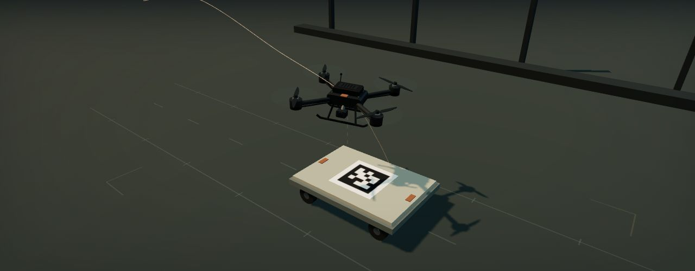
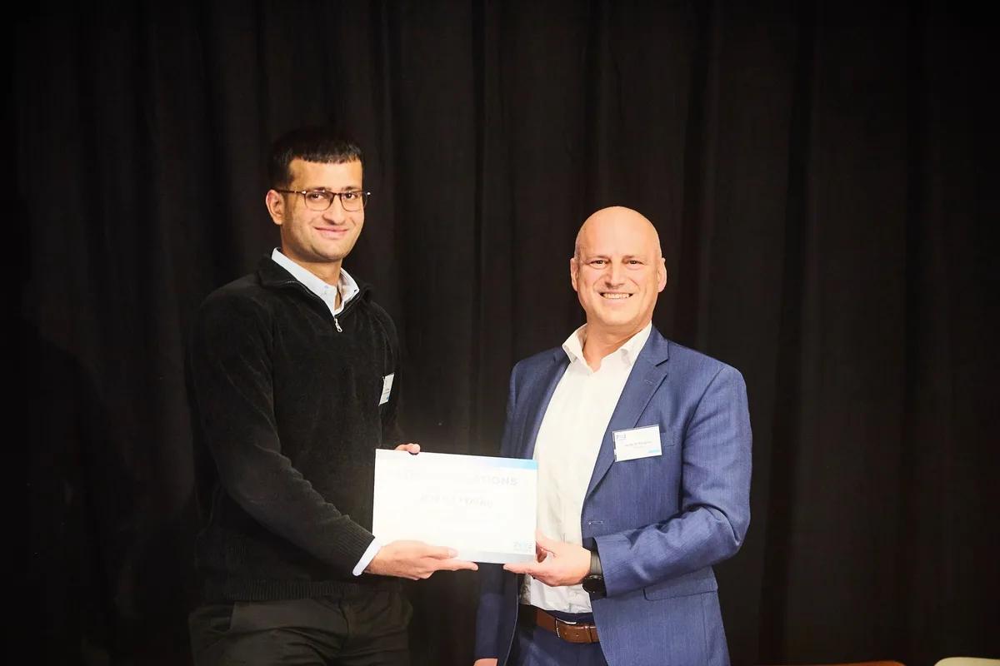

Meal planning and grocery companion.
An iOS-first companion connecting meal planning, grocery shopping, food journaling, and optional local AI into one everyday flow.

Kshitij PrasadENGINEER & BUILDER RésuméROBOTICS · DATA · SOFTWARE
Robotics engineer.
Product builder.
I work in data engineering at Audi and build robotics and software projects, including Nouri and Scope.
01 / SELECTED PROJECTS
Project details, working prototypes,
and the engineering behind them.
An iOS-first companion connecting meal planning, grocery shopping, food journaling, and optional local AI into one everyday flow.
An evidence-linked AI workflow for commercial insurance renewals. Source documents, changing facts, and broker review brought together in one prototype.
Benchmarked PPO, SAC and TD3 in Gazebo/PX4 SITL with trajectory logging and repeatable evaluation. PPO achieved 5.5 cm mean final horizontal error over 100 simulation episodes.
Vehicle telemetry pipelines, computer vision, and CLIP semantic search for retrieving and reconstructing real driving scenarios.
An interactive fleet-planning prototype with simulated demand and an optional PPO backend. First place at the PAVE Europe Next Gen Challenge in Brussels.
Real-time perception, motion planning, and sensor integration in C++ / ROS 2 on NVIDIA Jetson for an autonomous Formula Student racecar.
FURTHER PROJECTS
Connecting perception, object detection, and navigation for a physical service robot.
A human-centered decision-support prototype combining explainable AI, data pipelines, and dashboards for aviation.
A Pixhawk-based platform for hardware assembly, flight-controller integration and future policy testing.
Exploring accident scenarios through simulation, reconstruction, and immersive visualization.
A peer-tutoring platform connecting students at TH Ingolstadt.
UAV RESEARCH / INTERACTIVE FLIGHT STUDY
The task behind my bachelor’s thesis, brought into motion. Follow the approach, inspect the alignment, and watch the final descent.

SCENARIO STATE
Illustrative flight scenario. The recorded simulation and measured benchmark results are in the research case study.
Read the thesis ↗02 / EXPERIENCE
Building the bridge from real-world vehicle data to simulation-ready scenarios.
Developed a Gazebo/PX4 SITL landing benchmark with ROS 2 integration, policy training, trajectory logging and standardized evaluation of PPO, SAC and TD3. Physical policy transfer remains future work.
ROS 2 service robot integration, C++ perception and sensor interfaces, Nav2 navigation, and CARLA simulation scenarios for automated driving evaluation.
Real-time motion planning, multi-sensor integration, and embedded C++ / ROS 2 software on NVIDIA Jetson for an autonomous racecar.
Master’s studies · March 2026 | present
B.Eng. · Graduated 2026 · Thesis grade 1.0
03 / A BIT ABOUT ME
I’m an engineer based in Ingolstadt, Germany, working at the intersection of robotics, machine learning, and real-time software.
My work covers flight-control simulation, sensor integration, vehicle data pipelines and full-stack software. Nouri and Scope are current product prototypes that apply those software skills to everyday planning and evidence review.
I’m continuing my studies in AI Engineering of Autonomous Systems at TH Ingolstadt while working on data engineering and ADAS at Audi.
THE TOOLKIT
Software, simulation and hardware integration.
SQL · ROS 2 · Linux · Docker · Git
PPO · SAC · TD3 · CLIP · Computer vision
PX4 SITL · Digital twins
LiDAR · RealSense · GNSS · IMU

BRUSSELS / 2025
First place at the PAVE Europe Next Gen Challenge for work on autonomous mobility and public acceptance.
Read my recommendation from Prof. Dr.-Ing. Michael Mecking ↗CONTACT
Global Aerospace Innovation Challenge

Co-developed an explainable AI decision-support prototype for the 2026 Airbus Fly Your Ideas challenge. The project combines data processing pipelines with an interface that makes model decisions easier to inspect and understand.